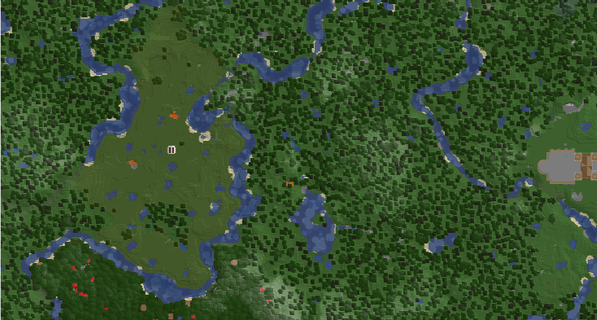

一个大概
2020年5月18日，backlight（现任镇长），正式创立桃花源小镇！（图为桃花源初期截图）
本镇名为桃花源，政治制度为民主共和制，这也体现了桃花源以玩家的游戏体验为中心、对玩家负责的宗旨。我们有完善的工业体系、美轮美奂的建筑以及合理的城镇规划。我们的交通发达便利，在主城乘坐地铁绿线即可到达，如果您觉得坐地铁太麻烦，我们还有发达的地狱交通，保证您不用为了跑图而劳神费力。
桃花源分为城区和住宅区，在城区内您只能修建中式或日式的建筑，在住宅区您可以修建任何风格的住宅来作为您的家！（在群内有明确的城区和住宅区的规划）如果您有意加入我们桃花源，请加群：1129324923(当然，您也可以选择主页上的加群按钮)
关于桃花源的几条规矩:
1.初入桃花源会有一定时间的观察期.（时间不会太长，只是确保您不会熊）
2.要规范使用红石机器，如果搞坏了会要求您承担相应责任.（如果不懂红石机器可以教您怎么用）
3.桃花源不承认多重镇籍，如果您想做个自由的人，可以允许您以顾问的形式加入桃花源.
4.禁止拿取过量的仓库物资，用多少拿多少，如有发现按偷窃处理。尊重工业组和后勤组每一位玩家的努力.
Charon：真的不是我吹，桃花源现在真的是唯一一个活着的镇子了所以快来人陪我一起无聊发呆养老吧（被拉走）